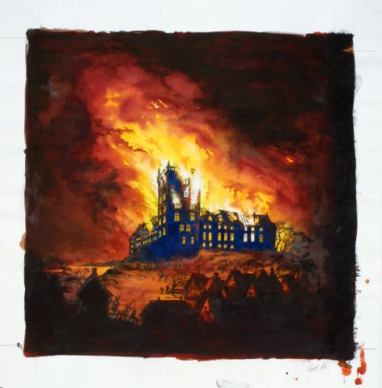

Koldinghus, som er Jyllands sidste kongeslot er mere end 750 år gammelt, og har spillet en rolle gennem Danmarks historie som grænseværn, kongelig residens og sæde for den lokale statsadminstration
I 1808, opstod der brand på slottet og det har siden trukket stor opmærksomhed fra både kunstnere og digtere, og har gennem de sidste 100 år været igennem restaureringer til et museum.
Som dreng og ung mand – fra 1583 til 1593 – opholdt Christian 4. sig i lange perioder på Koldinghus
Da han i 1596 var blevet kronet, foretog han som sit første større byggeri en ombygning af Koldinghus.
Riddersalen blev i 1700-årene opdelt i mindre rum. Tilbage fra Christian 4.s tid er kun resterne af nordmurens sandstenskamin.
I slotsgården fornyede Christian 4. alle trappetårne og lod de nye tårne udsmykke med sandstensportaler. Ligeledes fornyede han vandkunsten midt i slotsgården.
Branden i 1808

Natten mellem d. 29. og 30. marts 1808 opstod der en brand som på to dage ødelagde hele Koldinghus.
Der gik ingen liv tabt under branden, men Koldinghus blev efterladt om en ruin. Ingen tænkte på at genopbygge slottet før
1830 hvor H.C Andersen ville bevare ruinen, og i 1863 begyndte man at snakke om at genopbygge slottet.
Dog var det ikke før 1890, da museet ved Koldinghus blev stiftet at man begyndte på restaureringen af slottet.
Restaureringen blev tildelt EUROPA NOSTRA-prisen i 1993.